MAS thesis · MIT Media Lab · 2026
Born,
Not Made
A mother robot prints a baby robot inside the mother's own body, in gel, and gives birth in water.
Ruipeng Wang, second year MAS student, MIT Media Lab.
Thesis committee: Behnaz Farahi, Cynthia Breazeal, Kent Larson, Neil Gershenfeld.
Film. The tail docks, the arm prints, the baby is born.
This is an ongoing social experiment about a new kind of artificial species. The work has a trunk, the argument below, but it is an open question, so the site grows branches, keeps a log, and invites you in. The discussion is the work, as in Olafur Eliasson and Minik Rosing's Ice Watch, where Greenland ice melting in a public square became the conversation it started.
Leave a voiceSoft robotics meets artificial life
The main branch of this work sits where two fields meet. Artificial life has asked how a machine can make another machine. Soft robotics has given machines bodies that can be printed, filled and inflated. Here the second is placed under the umbrella of the first: soft robotics in the service of reproduction.
Since von Neumann, artificial life has studied reproduction as copying, mostly on screens. Robots have bodies, but they are assembled outside any parent. Bringing the two together turns an old question around: from how machines relate to us, to what happens between them, beginning with a mother and a child.
The title borrows a phrase from the Nicene Creed, "begotten, not made", and an echo of Blade Runner 2049, where a replicant born from another body is the event that breaks the order of things.
Like us inside, not outside
A humanoid copies the human form. This mother copies a human process.
A humanoid robot imitates the human from outside: face, hands, gait. Inside, it runs on a logic nothing like ours. The mother robot looks like nothing human. What the mother imitates is inside: a body formed within another body, held in fluid, fed through a cord, released by labour. The likeness is in the process, not the shape.
From copy to relation
In one body: kinship
A copy is the same as its maker. A child is part of the mother, and then separate. The baby forms whole inside the mother's body and leaves through birth.
In a species: relation and inheritance
One body gives birth; many shape the child. Mother agents pass part of their memory to baby agents. Across generations the population keeps what works and drifts from what was designed.
Kingma asks whether a fetus is a part of its mother (Mind, 2019). Hrdy argues that human young are raised by many, not by one (Mothers and Others, 2009). The work takes both as design rules.
Where this work stands
Other robots already make robots. None of them makes the baby inside a parent, and none gives birth.
Before them, cybernetics (Wiener, 1948) built machines that steer themselves, like Grey Walter’s robot tortoises (1948 to 1949), and machines that relate: in Gordon Pask’s Colloquy of Mobiles (Cybernetic Serendipity, London, 1968) “male” and “female” mobiles courted each other with light. Cyberfeminism later took its name from that word.

1948 · von Neumann
A machine gathers floating parts and builds another machine like itself.

1970 · Conway
Simple rules on a grid; a glider gun, found by Bill Gosper the same year, keeps producing gliders.

1997 · Sims, Galápagos
Viewers choose which virtual organisms survive, mate and mutate, on screens.
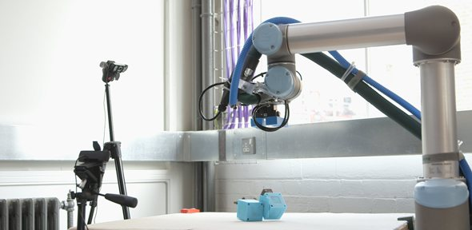
2015 · Iida, Cambridge
A mother robot arm glues cube children together, outside any body.

2017 · Eiben, Robot Baby
Two robots mate; the child is printed and assembled by hand, outside the parents.

2021 · Horibe, Walker, Risi
Soft robots grow cell by cell and regrow damaged parts, in simulation.

2022 · MIT CBA
Voxel robots build more robots from parts fed in.

2026 · This work
A robot mother prints the baby inside the body, in gel, then gives birth in water.
Why it prints
From zero, inside
A body is not delivered finished. It forms from almost nothing, slowly, inside another body. So the mother does not push out a ready made baby, as the first prototype did. The mother robot prints the baby from zero, inside the mother's own body.
In liquid
Amniotic fluid lets the fetus grow unimpeded and cushions it while it forms. In embedded printing a gel bath does the same for a soft print: it holds the body up while it takes shape.
The gel is the robotic womb's amniotic fluid. The baby forms held in it, and is born out of it.
First print in gel, October 2026.
Three prototypes, toward a womb that prints

First
A rigid shell. A water muscle and a pump push a ready made baby out.
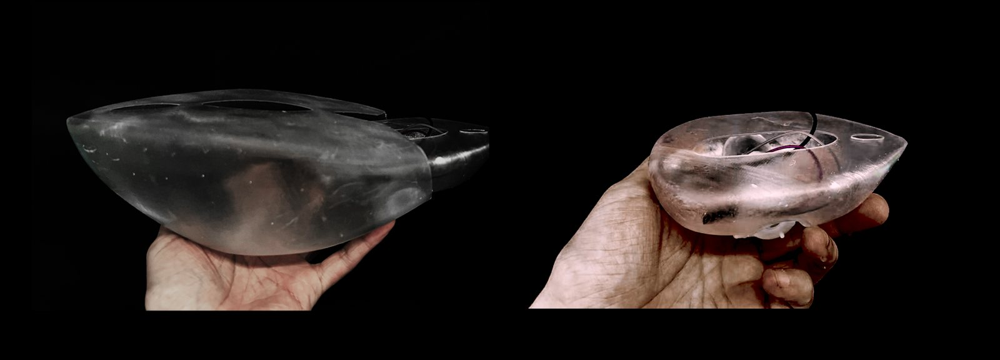
Second
A soft, clear body. Mother and baby each carry a chip, a battery and a water pump.

Third
An arm with a syringe goes inside the mother. The baby is made inside, not put in.
How each version worked, and what it taught: Prototypes, the first prototype page and the artist's page on the second.
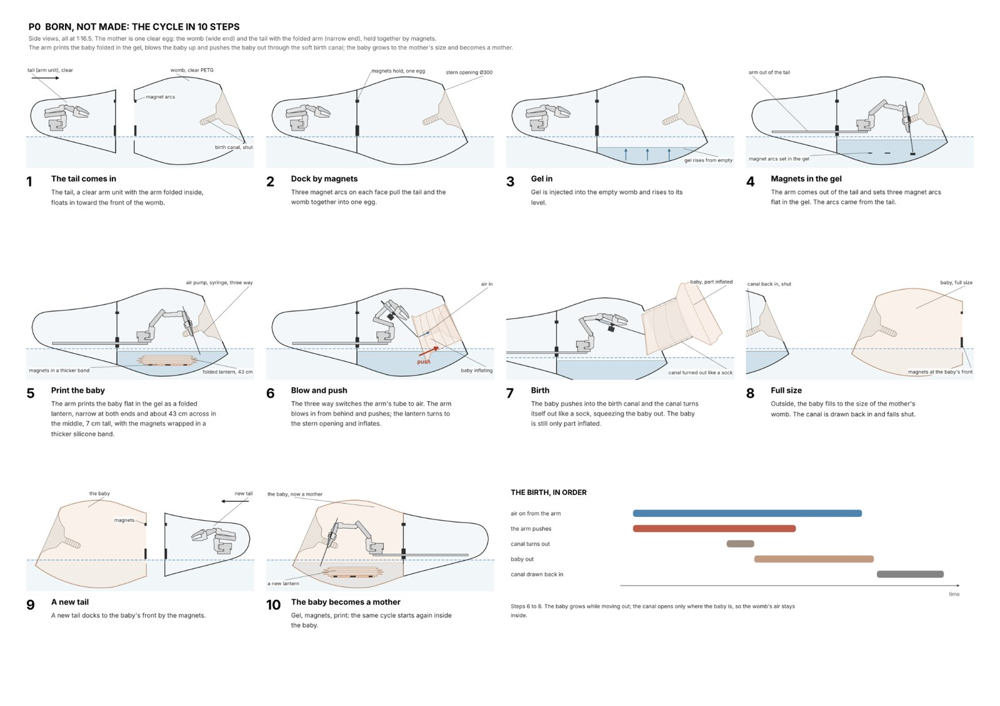
Print and assemble in one cycle: print the soft body, place the made parts, print over them.
One birth, step by step
The DexArm version, rendered from the Blender model.
The body changes too

The upper skin is printed silicone origami. The womb is closed and full of gel, so when the baby inflates, the baby's volume has to go somewhere: the pleats open and the belly rises. Pressure pulses then push the baby down the canal. After birth the womb vents, the pleats fold back and the skin sags a little under gravity. The swelling is not decoration. It is how a closed body makes room, pushes, and lets go.
Full mechanism, parts and sources: Build.
Not a copy
Babies of different forms and colours stay near the mother. One takes the arm and becomes the next mother.
A copy repeats its maker. Each birth here is generated from the mother's memory, the signals the mother receives, and chance, so every baby differs. What links them is relation: shared memory, likeness of body and time spent near each other. The Society tab runs this at the scale of a population.
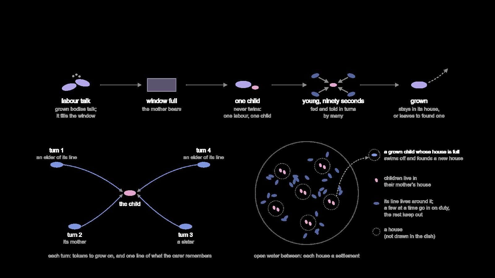
Can a machine be kin? What should a robot mother pass on, and what never? Tell us, in words or in a sketch. Every voice stays on the record, in the open.
Go to VoicesShown at
- ALIFE 2026, Waterloo, August 2026. Art gallery and the Artificial Life in the Wild / Agent Ethology workshop.
- VISAP 2026, IEEE VIS Arts Program: the exhibition Amplification, MIT Met Warehouse, Cambridge, 11 to 13 November 2026.
- NeurIPS 2026, Creative AI, Sydney, December 2026, with a travel award.
- Hard Mode, the MIT Media Lab's hardware and AI hackathon, March 2026. The jury created a Special Visionary Prize for this project.
References
- von Neumann, J. Theory of Self-Reproducing Automata, ed. A. W. Burks. University of Illinois Press, 1966.
- Gardner, M. "Mathematical Games." Scientific American 223(4), 120 to 123, 1970. doi
- Sims, K. Galápagos, 1997. karlsims.com
- Zykov, V. et al. "Self-reproducing machines." Nature 435, 163 to 164, 2005. doi
- Brodbeck, L., Hauser, S., Iida, F. "Morphological evolution of physical robots through model-free phenotype development." PLOS ONE 10(6), e0128444, 2015. doi
- Jelisavcic, M. et al. "Real-World Evolution of Robot Morphologies: A Proof of Concept." Artificial Life 23(2), 206 to 235, 2017. doi
- Horibe, K., Walker, K., Risi, S. "Regenerating Soft Robots through Neural Cellular Automata." Genetic Programming, EuroGP 2021, LNCS 12691, 36 to 50, 2021. doi arXiv
- Abdel-Rahman, A. et al. "Self-replicating hierarchical modular robotic swarms." Communications Engineering 1, 35, 2022. doi
- Kingma, E. "Were You a Part of Your Mother?" Mind 128(511), 609 to 646, 2019. doi
- Hrdy, S. B. Mothers and Others: The Evolutionary Origins of Mutual Understanding. Belknap Press, 2009.
- Fitzsimmons, E. D., Bajaj, T. "Embryology, Amniotic Fluid." StatPearls, 2023. NCBI
- Hajash, K. et al. "Large-Scale Rapid Liquid Printing." 3D Printing and Additive Manufacturing 4(3), 123 to 132, 2017. doi
- Hinton, T. J. et al. "3D Printing PDMS Elastomer in a Hydrophilic Support Bath via Freeform Reversible Embedding." ACS Biomaterials Science & Engineering 2(10), 1781 to 1786, 2016. doi
- O'Bryan, C. S. et al. "Self-assembled micro-organogels for 3D printing silicone structures." Science Advances 3(5), e1602800, 2017. doi
Ideas
Questions the work raises
A robot that gives birth touches old questions about wombs, mothers, fathers and water. Each one below starts plainly, follows the readings behind it, and ends open. Answer any of them in Voices.
01
From the artificial womb to the robotic womb
Doctors are building machines that let a very premature baby keep growing outside the mother. This work turns that around: it gives a machine a body that grows a baby inside.
In 1923 the biologist J. B. S. Haldane imagined a future in which "ectogenesis is now universal, and in this country less than 30 per cent of children are now born of woman" (Daedalus, 1924). In 2017 a team in Philadelphia kept extremely premature lambs alive for up to four weeks in a sealed bag of fluid, connected through the umbilical cord to an oxygenator (Partridge et al. 2017). The press called it an artificial womb.
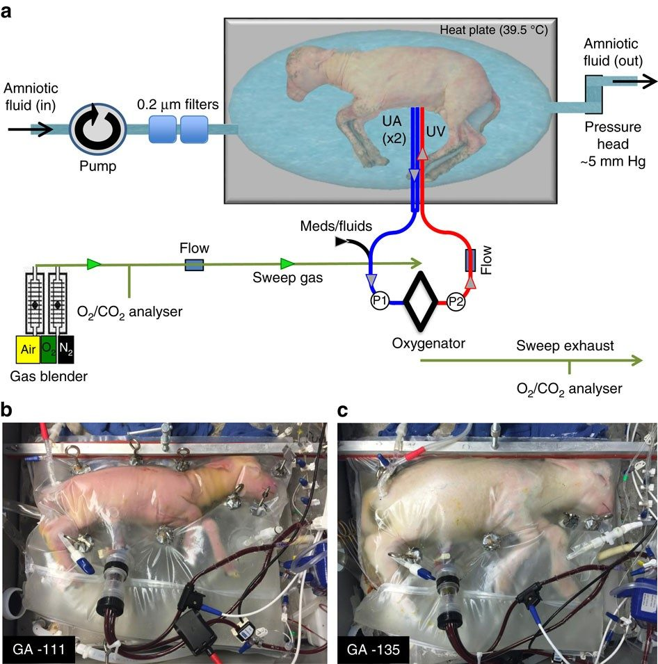
The Biobag. (a) the circuit: a closed amniotic fluid bath and an oxygenator on the umbilical vessels; (b, c) one lamb on day 4 and day 28 of support. Partridge et al., Nature Communications 8, 15112 (2017), Fig. 1. CC BY 4.0. Source
Not everyone accepts the name. The philosophers Elselijn Kingma and Suki Finn argue that the 2017 system is genuine ectogestation, "But it is not an artificial womb, which is a term that is better put to rest." For them birth is more than a change of place: it is "a physiological, mereological and topological transformation" (2020). The bioethicist Elizabeth Chloe Romanis proposes a new word for the being inside, the "gestateling" (2018).
A womb without a mother
- Where
- a hospital, outside any body
- Body
- a womb alone, with no body around it
- Holds
- a pregnancy that began in a woman
- Decides labour
- clinicians
- Labour
- replaced by surgery
A mother with a womb
- Where
- inside a member of a population
- Body
- a whole robot that moves; the womb fills most of the body
- Holds
- a machine formed from zero
- Decides labour
- the mother's own process
- Labour
- one labour, pushed into water
The artificial womb takes the womb out of the mother. The robotic womb puts the womb back into a body, one that carries and labours, so that the labour can be seen.
Kingma and Finn would retire the word womb for a bag in a hospital. Should a machine with a body be allowed to keep it? What does a womb need in order to be a womb: a body around it, a labour, a mother?
Answer in Voices02
Does a mother need a body?
Cyberfeminism and the matrix
The word matrix once meant womb. By the 1990s it also meant a digital space with no body at all.
Cyberfeminists took the word back. In 1991 the Adelaide collective VNS Matrix (Virginia Barratt, Julianne Pierce, Francesca da Rimini, Josephine Starrs) put their Cyberfeminist Manifesto for the 21st Century on a billboard, writing the body straight into the network. Sadie Plant's Zeros + Ones (1997) traced computing back to weaving. Ada Lovelace had already seen it in 1843: the Analytical Engine "weaves algebraical patterns just as the Jacquard-loom weaves flowers and leaves."

A Jacquard loom and its punched cards, National Museum of Scotland. Photo: Stephencdickson, 2019. CC BY-SA 4.0. Wikimedia Commons

The philosopher Irina Aristarkhova asks what this history forgot. In Hospitality of the Matrix (2012) the matrix is the place everything comes from (chora, womb, incubator), and what it does is an act of "matrixial/maternal hospitality": making space and matter for another. Her essay "Ectogenesis and Mother as Machine" (2005) asks what happens to the mother when machines take over gestation. Donna Haraway's cyborg goes the other way: it does not dream of community on the model of the organic family (1985).
The work has two kinds of mother. The mother robot in water has a body, a womb and a labour. The mother agents in the Society simulation have no body at all; they pass part of their memory to baby agents. Both are called mother here.
The mother robot, in water
- Has
- a body, a womb full of gel, an arm
- Passes on
- a body, printed from zero
- Ends with
- a labour and a birth
A mother agent, on screen
- Has
- memory and signals, no body
- Passes on
- part of a memory
- Ends with
- a new agent that drifts from the old one
Is a mother agent that passes on memory, without a womb, still a mother? What, if anything, can only a body give?
Answer in Voices03
A feminism that starts from the mother
Matricentric feminism
Being a mother is not the same as being a woman, and some feminists argue that mothers need a theory of their own.
Andrea O'Reilly calls it matricentric feminism. Mothers, she argues, need a feminism of their own, one that takes mothers' concerns as its starting point rather than a footnote to women's (Matricentric Feminism, 2016; second edition 2021).
Long before, the poet Adrienne Rich separated two things that share one word: motherhood as an institution, shaped by law, medicine and custom, and mothering as an experience (Of Woman Born, 1976).
The robotic womb is built from that side: from the mother and the labour, not from the baby as a product. Yet a robot has no experience we can be sure of, and every rule the mother robot follows was written by someone. In Rich's terms, the mother robot may be all institution and no experience.

The Child's Bath, Mary Cassatt, 1893, oil on canvas, Art Institute of Chicago. Public domain. Wikimedia Commons

Can a feminism that starts from mothers make room for a mother that is not a woman, and may not be alive? Or does a robot mother take something that belongs to mothers?
Answer in Voices04
Bodies of water
Hydrofeminism
Every person begins in water, inside another body.
The philosopher Astrida Neimanis starts from that fact. In Bodies of Water (2017), which grew from her essay "Hydrofeminism" (2012), she writes: "Watery bodies are gestational milieus for another" (p. 3). Gestation, she argues, belongs to water itself, a "facilitative logic of our bodily water" that she calls posthuman gestationality (p. 4). The human womb is one case among many: the sea, the pond, the egg.
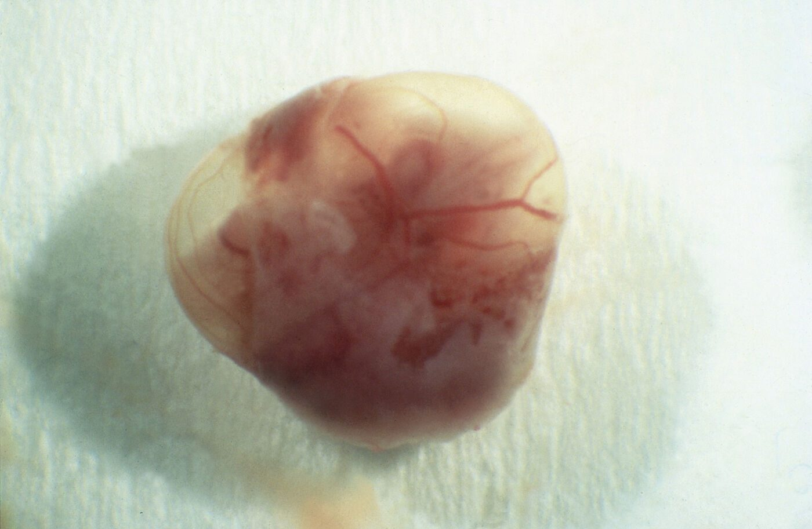
A 12 day old mouse embryo, removed from the uterus, still in its amniotic sac and attached to the placenta. Photo: Paul Martin, Wellcome Collection. CC0. Source
The Work page treats the gel as amniotic fluid. Neimanis lets the idea run further. The baby forms in gel inside the mother, is born into water, and in the Society tab every mother and baby shares one body of water that feeds only so many. Water holds the work at every scale.
Waters inside waters
If water does part of the gestating, is the tank also a mother? Who, or what, gives birth here: the robot, the gel, or the water?
Answer in Voices05
A mother as a relation, not one body
The Mosuo, and the case against the private mother
In some families, a child calls several women mother.
Among the Mosuo, also called Na, who live around Lugu Lake on the border of Yunnan and Sichuan in southwest China, many households are matrilineal: adults live with their siblings and maternal kin, and children grow up in their mother's house. Lovers meet in the woman's house at night, and the man returns to his own maternal family at dawn, a practice known as walking marriage (Xiao et al. 2022; Shih 2010). The anthropologist Cai Hua titled his study A Society without Fathers or Husbands (2001).
The words follow the household. In Mosuo, a child's mother and all of the mother's sisters are called Ami, with no distinction between birth mother, foster mother and aunt. The mother's brothers and the father share one word too, awu (Xiao et al. 2022).
One household, many mothers
Swipe sideways to see the whole diagram.
Drawn after Xiao, Jin, Hong and Zhang, Frontiers in Psychology 13, 873137 (2022). Households vary, and change with tourism and markets.
The political theorist Sophie Lewis argues from another direction: gestation is work, and no child should belong to one mother alone (Full Surrogacy Now, 2019; Abolish the Family, 2022). In the Society simulation one body labours, but a baby learns from whoever speaks to the baby.
In a population of robots, who should count as a mother: the one body that labours, or everyone the baby learns from? Would robots need a word like Ami?
Answer in Voices06
Is mother a function or a gender?
In seahorses, the male gets pregnant.
Sex usually names the body: cells, organs, who makes eggs and who makes sperm. Gender names the roles and identities a society builds on top (Oakley 1972). Biology already pulls the word mother loose from both. In seahorses and pipefish the male carries the embryos in a brood pouch that gives them protection, gas exchange, osmoregulation and some nutrients (Whittington et al. 2015). Some reef fish change sex as adults. In an anemonefish group the largest fish is the female and the next largest the breeding male; if the female disappears, the male becomes female (Fricke and Fricke 1977; Buston 2003). In the cleaner wrasse the change runs the other way: when the male dies, the dominant female changes sex at once (Robertson 1972). Ursula K. Le Guin imagined people with no fixed sex at all, any of whom could bear a child (The Left Hand of Darkness, 1969).

A pregnant male White's seahorse, Hippocampus whitei, Sydney. Photo: Sylke Rohrlach, 2015. CC BY-SA 2.0. Wikimedia Commons
.jpg){kind=link}

The brood pouch, with embryos, Hippocampus comes. From Lin et al., Nature 540 (2016). CC BY-SA 4.0. Wikimedia Commons

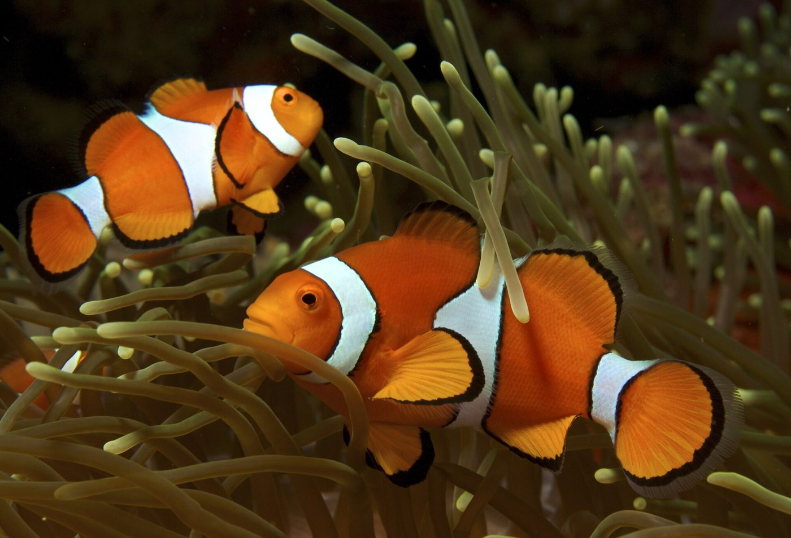
Clown anemonefish, Amphiprion ocellaris, Papua New Guinea. Photo: Nick Hobgood, 2013. CC BY-SA 3.0. Wikimedia Commons
_by_Nick_Hobgood.jpg){kind=link}

Bluestreak cleaner wrasse, Labroides dimidiatus, Lembeh, Indonesia. Photo: Rickard Zerpe, 2018. CC BY 2.0. Wikimedia Commons
_(40460962202).jpg){kind=link}
Who becomes what, and when
Swipe sideways to see the whole diagram.
These are facts about sex, not gender, and leaning on nature to settle a social question is a move many feminists distrust. What the animals show is only that the body that gestates is not fixed. Here, mother names a function: the body that carries the arm and the womb, and labours. When a baby takes the arm, that baby becomes the next mother, much as a clownfish moves up into a place left empty.
Should the robots have a sex at all? If mother is a place in a group that passes with the arm, what is the robot that has just given the arm away? This site uses no pronoun for the mother or the baby. Which would you use?
Answer in Voices07
Does the mother robot have a father?
Every baby here has a mother robot. Nobody has decided whether there is a father.
The title's creed line, "begotten, not made" (in Greek gennētheis, ou poiētheis), names a Father's act; the work borrows the words for a mother's. Greek myth tells both kinds of one parent birth. Zeus "gave birth from his own head" to Athena; Hera, angry with Zeus, bore Hephaestus "without union with Zeus" (Hesiod, Theogony 924 to 929). That fatherless son became the craftsman of the gods, served by "golden handmaids" who were "like real young women, with sense and reason" (Iliad 18): some of the first robots ever imagined were made by a child with no father.
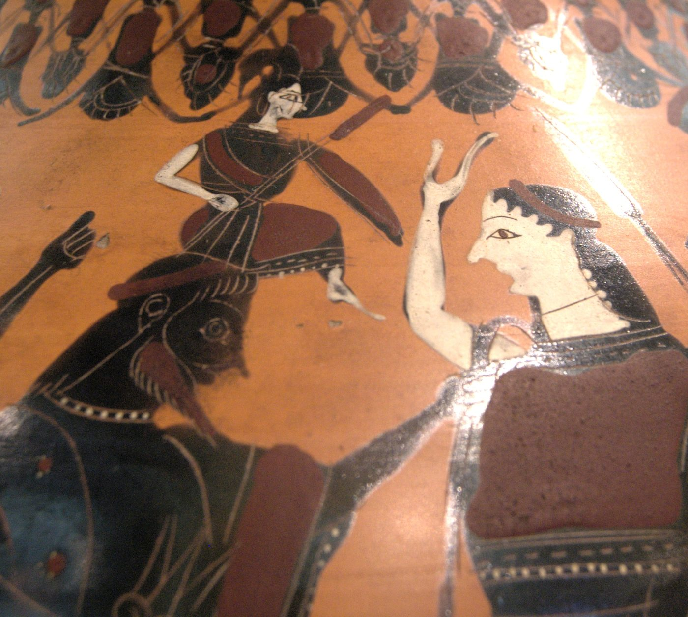
The birth of Athena from the head of Zeus, Attic black figure amphora, 550 to 525 BCE, Louvre F32. Photo: Bibi Saint-Pol, 2007. Public domain. Wikimedia Commons


Frontispiece to Frankenstein, 1831 edition, steel engraving after Theodor von Holst. Public domain. Wikimedia Commons

Icon of the First Council of Nicaea, the bishops holding the creed. Unknown painter. Public domain. Wikimedia Commons

Modern stories of made life keep the father and lose the mother. Victor Frankenstein dreams that "A new species would bless me as its creator and source," and that "No father could claim the gratitude of his child so completely" (Shelley 1818). The anthropologist Stefan Helmreich found artificial life researchers who saw themselves as "masculine gods of their cyberspace creations" (1998). Haraway's cyborg answers that its fathers are inessential (1985).
Four candidates, none chosen
Swipe sideways to see the whole diagram.
Pick a candidate.
Does a lineage need a father, or only a beginning? If humans are the first ancestors of this line, what do we pass on, and what do we owe the line we started?
Answer in Voices08
What is a womb? One word, many languages
In many languages, the word for womb also means mother, child, or mercy.
Touch or hover a language
The meanings gather in three groups. Latin mātrix and Greek mētra grow from the word for mother. Chinese 子宫, the child's palace, and Sanskrit garbha, womb and embryo in one word, are named for the one who is held. Hebrew reḥem and Arabic raḥim share a root with mercy, and Shingon Buddhism's Womb Realm is "born of the womb of great compassion." Its name, taizō, is thought to render the Sanskrit garbha, so the word travelled from India to Japan with its meaning intact.

Womb World, from the Mandala of the Two Worlds, Japan, 15th century, Chester Beatty Library, CBL J 1216.2. Public domain. Wikimedia Commons
_(CBL_J_1216.2).jpg){kind=link}

The fetus in the womb, Leonardo da Vinci, about 1511, Royal Collection, RCIN 919102. Public domain. Wikimedia Commons

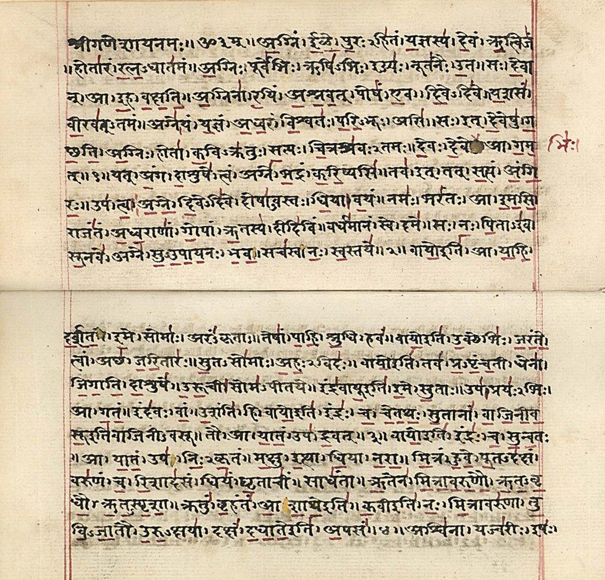
A Rigveda manuscript, India, early 19th century, Schøyen Collection MS 2097. Hymn 10.121 praises Hiraṇyagarbha, the golden womb. Public domain. Wikimedia Commons

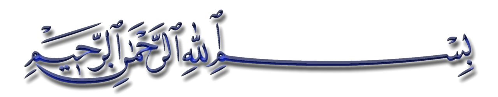
The basmala: in the name of God, al-Raḥmān, al-Raḥīm, the Merciful, the Compassionate. Calligraphy, public domain. Wikimedia Commons

From womb, to mould, to simulation
Latin
mātrixfrom māter, mother: a breeding animal, then the womb, then a source.by the 1620s
a mouldthe hollow in which something is cast or shaped.1851 · Sylvester
an array"a rectangular array of terms" from which determinants are engendered "as from the womb of a common parent".1984 · 1999
the matrixcyberspace in Gibson's Neuromancer; then a film in which machines grow people in pods.2026 · this work
a body againthe word returns to a body that labours.
Which of these meanings should the robotic womb carry: the mould, the child's palace, the origin, or mercy? Can a word come back from a simulation into a body?
Answer in Voices09
Why labour, and why a male artist?
A child is born; a mother labours.
Birth names the arrival. Labour names what the mother goes through to deliver. Latin labor meant toil and exertion, and Virgil already speaks of Lucinae labores, the labours of the goddess of childbirth (Georgics 4.340). In English the sense of the physical exertions of childbirth is recorded from the 1590s. A dictionary today defines it as "the physical activities (such as dilation of the cervix and contraction of the uterus) involved in giving birth."
That is why the work changed its word from birth to labour. For a robot, labour is an anthropomorphic word. It is kept on purpose, so that the event is felt from the mother's side.
Why does a male artist build a robotic womb? The artist's answer is short: "I will never give birth, but I am my mother's son." The mother here is a robot, neither woman nor man, so that everyone can watch the same labour from the same distance, without exposing anyone's body. The work is meant as praise of that labour.
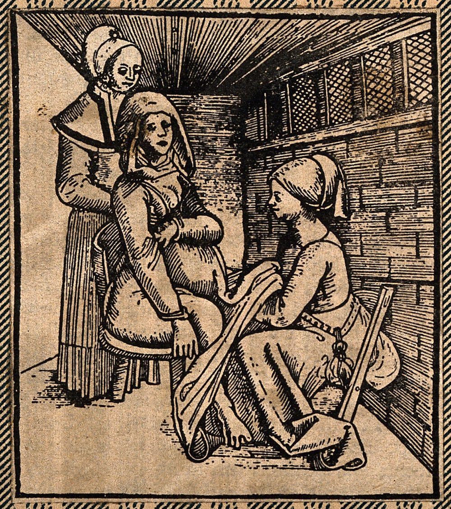
A woman in labour on a birthing chair, woodcut from Eucharius Rösslin, Der Swangern Frauwen und Hebammen Rosengarten, Strasbourg, 1513, the first printed handbook for midwives. Wellcome Collection, Public Domain Mark. Source
Can someone who will never labour honour labour without taking its place? Does a robot mother help people see that labour, or stand in the way?
Answer in VoicesFiction got here first, from Frankenstein to an android called Mother. The novels, films and artworks around this work now live in their own tab.
Go to CultureReferences
Primary sources first. Image credits are in each caption.
01 · Artificial womb
- Haldane, J. B. S. Daedalus, or Science and the Future. Kegan Paul, 1924. A paper read to the Heretics, Cambridge, 4 February 1923. text
- Partridge, E. A., et al. "An extra-uterine system to physiologically support the extreme premature lamb." Nature Communications 8, 15112, 2017. doi
- Kingma, E., Finn, S. "Neonatal incubator or artificial womb? Distinguishing ectogestation and ectogenesis using the metaphysics of pregnancy." Bioethics 34(4), 354 to 363, 2020. doi
- Romanis, E. C. "Artificial womb technology and the frontiers of human reproduction: conceptual differences and potential implications." Journal of Medical Ethics 44(11), 751 to 755, 2018. doi
02 · Does a mother need a body?
- VNS Matrix. A Cyberfeminist Manifesto for the 21st Century. Adelaide, 1991. vnsmatrix.net
- Plant, S. Zeros + Ones: Digital Women and the New Technoculture. Doubleday, 1997.
- Menabrea, L. F. "Sketch of the Analytical Engine invented by Charles Babbage," translated with notes by A. A. Lovelace. Scientific Memoirs 3, 1843, Note A. text
- Aristarkhova, I. Hospitality of the Matrix: Philosophy, Biomedicine, and Culture. Columbia University Press, 2012. publisher
- Aristarkhova, I. "Ectogenesis and Mother as Machine." Body & Society 11(3), 43 to 59, 2005. doi
- Haraway, D. "A Manifesto for Cyborgs: Science, Technology, and Socialist Feminism in the 1980s." Socialist Review 80, 1985. Revised in Simians, Cyborgs, and Women, Routledge, 1991.
03 · Starting from the mother
- O'Reilly, A. Matricentric Feminism: Theory, Activism, Practice. Demeter Press, 2016; 2nd ed. 2021. publisher
- Rich, A. Of Woman Born: Motherhood as Experience and Institution. W. W. Norton, 1976. publisher
04 · Bodies of water
- Neimanis, A. Bodies of Water: Posthuman Feminist Phenomenology. Bloomsbury Academic, 2017, pp. 3 to 4. Open access, CC BY-NC-ND 3.0. OAPEN
- Neimanis, A. "Hydrofeminism: Or, On Becoming a Body of Water." In H. Gunkel, C. Nigianni and F. Söderbäck (eds.), Undutiful Daughters. Palgrave Macmillan, 2012.
05 · A mother as a relation
- Xiao, E., Jin, J., Hong, Z., Zhang, J. "The Relationship Between Children and Their Maternal Uncles: A Unique Parenting Mode in Mosuo Culture." Frontiers in Psychology 13, 873137, 2022. doi
- Cai Hua. A Society without Fathers or Husbands: The Na of China. Zone Books, 2001. publisher
- Shih, C. Quest for Harmony: The Moso Traditions of Sexual Union and Family Life. Stanford University Press, 2010.
- Lewis, S. Full Surrogacy Now: Feminism Against Family. Verso, 2019. publisher
- Lewis, S. Abolish the Family. Verso, 2022.
06 · Function or gender
- Oakley, A. Sex, Gender and Society. Temple Smith, 1972.
- Whittington, C. M., Griffith, O. W., Qi, W., Thompson, M. B., Wilson, A. B. "Seahorse brood pouch transcriptome reveals common genes associated with vertebrate pregnancy." Molecular Biology and Evolution 32(12), 3114 to 3131, 2015. doi
- Lin, Q., et al. "The seahorse genome and the evolution of its specialized morphology." Nature 540, 395 to 399, 2016. doi
- Fricke, H., Fricke, S. "Monogamy and sex change by aggressive dominance in coral reef fish." Nature 266, 830 to 832, 1977. doi
- Buston, P. "Size and growth modification in clownfish." Nature 424, 145 to 146, 2003. doi
- Robertson, D. R. "Social control of sex reversal in a coral-reef fish." Science 177(4053), 1007 to 1009, 1972. doi
- Le Guin, U. K. The Left Hand of Darkness. Ace Books, 1969.
07 · A father?
- Schaff, P. The Creeds of Christendom, vol. 1, 1877: the Nicene Creed, "begotten, not made". CCEL
- Hesiod. Theogony 924 to 929. Trans. H. G. Evelyn-White, 1914. text
- Homer. Iliad, book 18. Trans. S. Butler, 1898. text
- Shelley, M. Frankenstein; or, The Modern Prometheus. Lackington, 1818, vol. 1, ch. 3. text
- Helmreich, S. Silicon Second Nature: Culturing Artificial Life in a Digital World. University of California Press, 1998. publisher
- Watts, P. C., et al. "Parthenogenesis in Komodo dragons." Nature 444, 1021 to 1022, 2006. doi
08 · The word womb
- Lewis, C. T., Short, C. A Latin Dictionary. Oxford, 1879, s.v. mātrix. Logeion
- Liddell, H. G., Scott, R., Jones, H. S. A Greek-English Lexicon, s.v. μήτρα; ὑστέρα. Logeion
- Online Etymology Dictionary, "matrix"; "hysteria". etymonline
- Huangdi Neijing, Suwen, "Wuzang bielun" (五藏別論): 女子胞 among the organs that store and do not discharge. Wikisource
- Monier-Williams, M. A Sanskrit-English Dictionary. Oxford, 1899, p. 349, garbha; p. 1299, hiraṇya-garbha (citing Rigveda 10.121). Cologne
- Strong's Hebrew 7358, reḥem; 7356, raḥamim. Bible Hub
- Sahih al-Bukhari 5988: "Ar-Rahm (womb) derives its name from Ar-Rahman". sunnah.com
- JAANUS, Japanese Architecture and Art Net Users System, "Taizoukai mandara". JAANUS
- Sylvester, J. J. "On the relation between the minor determinants of linearly equivalent quadratic functions." Philosophical Magazine (4th series) 1, 295 to 305, 1851. Collected Mathematical Papers 1, p. 247. archive.org
- Gibson, W. Neuromancer. Ace Books, 1984.
- The Matrix. Dir. the Wachowskis. Warner Bros., 1999.
09 · Why labour
- Lewis, C. T., Short, C. A Latin Dictionary, s.v. labor, citing Virgil, Georgics 4.340. Logeion
- Online Etymology Dictionary, "labour": childbirth sense from the 1590s. etymonline
- Merriam-Webster, "labor", noun, sense 1c. merriam-webster.com
- Rösslin, E. Der Swangern Frauwen und Hebammen Rosengarten. Strasbourg, 1513.
Build
Every part, taken apart
A parametric white model of the mother, tail, arm and baby. Explode it, pick a part, read its spec, its tolerance and its source. Change the folds and run the birth.
Simulator
The printing process
A console modelled on Blender. Speak or type a signal. The mother robot reads the signal against stored memory, writes G-code, prints the baby in the gel, inflates the baby and gives birth. Every birth is different.
Prototypes
Before the womb printed
The first and second versions in full, and the third as the bridge to printing: how each worked and what each taught.
Process
How the work got here
Discussions, options, decisions and reversals, tests, renders and shows, oldest first. Follow one idea through its changes.
Talk
Conversations
A documentary in text: one to one talks about the work with researchers, artists and friends. Each entry paraphrases what the other person said; the artist's replies are left out. It begins with the first teacher who planted the idea. Some agree, some doubt, and all of it shaped the work.
Questions people asked
Loading conversations…
Talked with the artist about the work and want an entry named, corrected or removed? Say so in Voices.
Talk
Voices: an open experiment
Anyone can leave words or a drawing about the mother, kinship between robots, a design idea, a worry or a question. Every voice stays public, with a link to where it came from.
Simulator
The physics of printing and birth
A finite element model of the bellows baby passing the soft sleeve, four ways of pushing side by side, and the bead, layer and gel numbers that decide the print.
Society
When reproduction runs at scale
Many mothers and babies share one body of water. A robot bears only with enough relations and energy. Memory passes on with drift. The water feeds only so many. Send a signal and follow how far it travels.